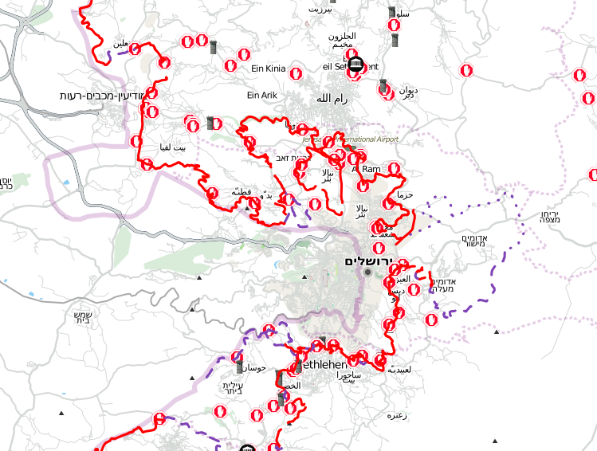

The idea that map-making is a kind of cartographic harvesting of the most vulnerable places and people on the planet is a valid fear, however it is based on a relatively one-sided reading of history, and especially of contemporary mapping practice. Maps can just as effectively be used to defend as to conquer, as a wide variety of cartographic activists have demonstrated. B'Tselem, a progressive Israeli human rights group based in Jerusalem, has used maps of Israeli settlements in the West Bank to further their the critique of those settlements as the illegal annexation of land. Jai Sen, a political organizer in Calcutta in the 1980's, used maps of urban slums as a form of testimony, effectively proving that people lived on the land before authorities bulldozed it and claimed that it was uninhabited from the start.
| r0.5

|
VirtualGaza, a project by Josh Levinger, published narratives by victims of the 2008 war in Gaza, linking the cartographic representation(one reason for the conflict) with the human stories and images it caused. The OpenLayers-based map, available at http://virtualgaza.media.mit.edu, protected participants' locations by purposely categorizing them by region instead of displaying more precise coordinates. Levinger's second project in the area, GroundTruth, demonstrated a routing algorithm which could, given a user's legal status, create a travel plan which would avoid IDF checkpoints, actively seeking to disrupt the balance of power in the region by using cartographic information.3.4 Other cartographers have during the same conflict in Gaza, Mikel Maron defended his work towards the participatory creation of a free and open map of Gaza:
...it's frankly the same security through obscurity argument peddled for centuries... a strategy on the verge of finally dissolving in a world of openness and transparency. The IDF access to much better intelligence and imagery than we'd ever have, they fly drones over Gaza, there's a 2m resolution commercial limit in all satellite imagery over Israel — guess who gets to see the sub-meter imagery? Gazans have nothing to gain by trying keep secrets, the asymmetry of that game is overwhelmingly not in their favor. [31]
Maron later refined his position to except certain highly vulnerable groups 3.5:
In general, I view these edge cases as a question of power. Hiding information protects those already in power, but not those that are already marginalized. Legitimate cases to me is only information that puts dis-empowered people at risk, such as refugee routes along the Burmese-Indian border. [32]
However the gist of his argument is sound -- that cartography is necessarily a losing game only for those who are unable to participate in its creation. Those who are unable to communicate in the relevant cartographic language of power - be it GeoJSON, TMS or just paper - never even know they are being mapped, or what that might mean for their well being or safety.3.6 In some ways, this is a subset of the debate championed by Evgeny Morozov, Clay Shirky, and Patrick Meier3.7 over whether new media is a force for democracy, or at least whether it supports `popular resistance against repressive rule' as Meier puts it. [35] Morozov even mentions mapping repeatedly, for example when he ridicules the sappiest anecdotes of the technological freedom fighters:
...Burmese monks defying an evil junta with digital cameras; Filipino teenagers using SMS to create a “textual revolution;” Egyptian activists using encryption to hide from the all-seeing-eye of the Mukhabarat; even Brazilian ecologists using Google maps to show deforestation in the Amazon delta. [39]
In Morozov's opinion, the belief that such technologies can disrupt power relations `...requires certainty that only pro-western and pro-democracy forces will participate.' His examples, though anecdotal, are sobering: `In Russia, the internet has given a boost to extreme right-wing groups like the Movement Against Illegal Immigration, which has been using Google Maps to visualise the location of ethnic minorities in Russian cities and encouraging its members to hound them out.'
(rev. see following quote)
The problem with this debate is that it is too abstract. We cannot say universally that map-making (or any other technology) will support local needs over those of the state, but by working closely with local participants in a sensitive manner, we can invert the flow of information and affect power relations. Balloon and kite mapping is not a scalable technology -- it would be impractical for Google or governments to use these techniques to map entire countries. However it is well adapted for small-scale use, and has important advantages in cost, repeatability, resolution, and speed, in that context. My attempts to apply these tools and techniques have focused on these benefits, and in the specific settings in which I have worked, they have allowed local groups to produce better maps than anyone else, for a limited but highly relevant area. In a time when many in the crisis community were struggling to get large organizations such as Google, the United Nations, etc. to release satellite imagery3.8, the Louisiana Bucket Brigade actually licensed map data to Google - data gathered using Grassroots Mapping tools and techniques.3.9
(more to do with adoption, appropriation - hence focus on collaboration, pedagogy, by and with local groups, rather than boolean)
Research on the Internet’s role in politics has struggled to transcend technological determinism—the assumption, often inadvertent, that the technology simply imprints its own logic on social relationships. An alternative approach traces the ways, often numerous, in which an institution’s participants appropriate the technology in the service of goals, strategies, and relationships that the institution has already organized. -- Agre, Philip E. 2002. “Real-Time Politics: The Internet and the Political Process.” The Information Society 18:311-331.
`Technology only magnifies human intent and capacity. It cannot substitute for them' -- Kentaro Toyama
Corbett, Jon M., and C. Peter Keller. 2005. An Analytical Framework to Examine Empowerment Associated with Participatory Geographic Information Systems (PGIS). Cartographica 40 (4):91-102.